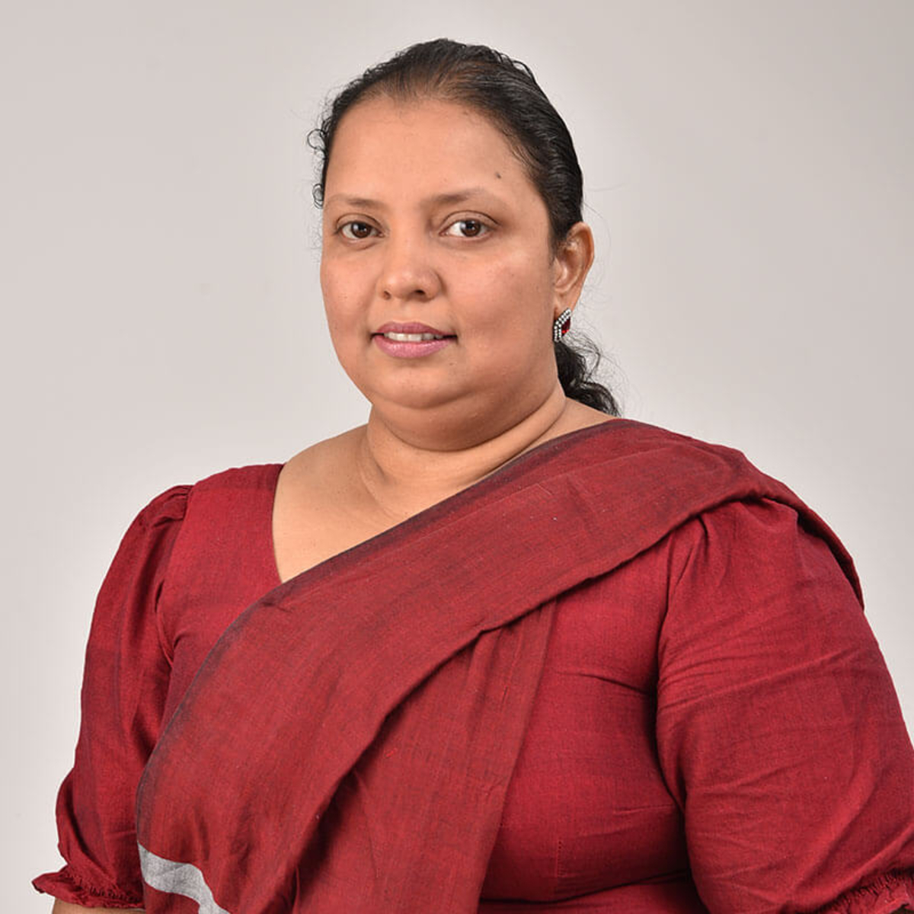

Ticket Fraud Detection
Intelligent ticket fraud detection and risk-aware passenger verification.
CeylonRail AI is an academic research project exploring intelligent, data-driven solutions to improve railway operational efficiency, passenger services, revenue protection and decision-making in Sri Lanka.
Predict · Optimize · Verify · Improve
Our research investigates how artificial intelligence and optimization can support more informed railway operational decisions.
Intelligent ticket fraud detection and risk-aware passenger verification.
Real-time train tracking and probabilistic delay prediction research.
Multi-objective optimization for train scheduling and capacity management.
Spatio-temporal passenger demand forecasting and adaptive seat allocation.
CeylonRail AI investigates how artificial intelligence, predictive analytics and optimization can support efficient, reliable and passenger-focused railway operations in Sri Lanka.
The research considers existing approaches to railway demand forecasting, intelligent transportation, operational optimization and data-driven decision-support systems.
Existing approaches provide limited integration between passenger demand forecasting and operational decision-making, uncertainty-aware railway analytics and fairness-aware capacity allocation.
Railway operations face challenges involving unpredictable passenger demand, inefficient capacity utilization, overcrowding, operational uncertainty and limited predictive decision support.
To investigate an integrated AI-driven decision-support framework that improves railway operational efficiency, passenger service quality, fraud mitigation and fairness under uncertainty.
The research investigates data collection, preprocessing, feature engineering, model development, predictive analytics, optimization, simulation and experimental evaluation.
The research platform uses React and JavaScript for its frontend, Node.js for backend services and Python for AI, machine learning, forecasting and optimization experiments.
Project proposal, progress presentations, final assessment and viva details will be added with their confirmed dates and marking allocations.
Project charter, research proposals, checklists and final reports will be linked here once the shareable versions are collected.
Proposal, Progress Presentation 1, Progress Presentation 2 and final presentation slides will be listed here as available.
Meet the supervisors and four researchers behind CeylonRail AI at the Sri Lanka Institute of Information Technology.

SupervisorMulti-Objective Train Scheduling and Capacity Management
it22217240@my.sliit.lkIntelligent Real-Time Train Tracking and Probabilistic Delay Prediction
it22051202@my.sliit.lkAdvanced Intelligent Ticket Fraud Detection and Risk-Aware Passenger Verification
it22126610@my.sliit.lkSpatio-Temporal Demand Forecasting and Adaptive Seat Allocation
it22151506@my.sliit.lkHave questions about CeylonRail AI? Contact our academic supervisors or the research team for project-related inquiries.
Our four-member team researches AI-driven intelligent railway operations as part of the IT4010 Research Project at SLIIT.
Project ID: R26-IT-127